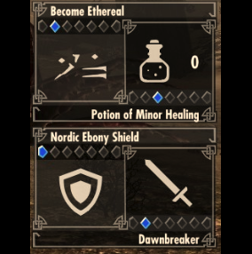

Inspired by this paper, I wanted to explore the different methods for procedural terrain generation. In this project, I implemented my own variations of the diamond square, midpoint displacement, perlin noise, and simplex noise algorithms.
Project LinkAlso known as "Life", Conway's Game of Life is a specific set of rules that when applied to a cellular automata create an interesting and lifelike effect. In this project, I implemented my own variation of Conway's rules using HTML5 Canvas.
Project LinkFluid simulation is one of the most challenging, unsolvable, and computationally expensive fields in computer graphics. In this project, I wanted to test out the performance of a real-time 2D Eulerian Fuild solver using plain HTML and JavaScript.
Project LinkThis is just a fun project I chose to do in order to have an excuse to use CodePen and also develop a better understanding of CSS. Everything besides the clock in this project was written in pure HTML5 and CSS3.
CodePen LinkThis was a hybrid mobile app that I was the lead developer on when working at Lincs. It was for a food delivery service implemented using Ionic, AngularJS, and Firebase. Unfortunately, the app is no longer available on the Android and iOS stores.
Screenshot 1 Screenshot 2 Screenshot 3This was a screenshot from the final project of a graduate level computer graphics course at Clemson. The class was called Physically Based Animation, and for the final project I implemented a lava lamp particle simulator. I used the marching cubes and flocking algorithms to create the effect. It was implemented in C++ using OpenGL and Glut.
Project Proposal VideoThis was a Chrome extension I developed at Clemson to examine any web page for accessibility. It uses the QuailJS library to analyze the page's DOM and returns a report and list of recommendations to improve the site's accessibility score.
Github LinkThe goal of this project was to design and develop a visualization tool showing how the population distribution of different countries by age has changed over time. Specifically, the visualization technique I chose to focus on and improve is the population pyramid.
View PDFFluid simulation is one of the most challenging, unsolvable, and computationally expensive fields in computer graphics. In this project, I wanted to incorporate various real-time fluid simulation methods into a cool and fun game! The project was coded in C++ and Glut.
VideoOne of the deliverables for my Master's thesis was an online application that anyone can use to solve challening programming problems with the intent of teaching beginners to code. You can use C++ or Python to solve the questions which will give you a report of different code metrics to measure software quality.
Project Link Thesis PresentationIn this project, I used the Pixi.js library to create a basic game. The project's purpose was to better understand parallax scrolling to create a sense of depth in 2D games.
Project Link